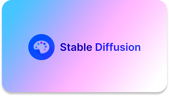
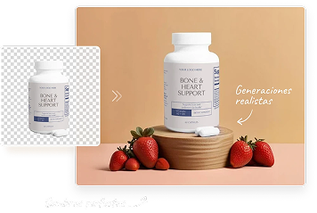
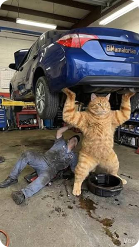
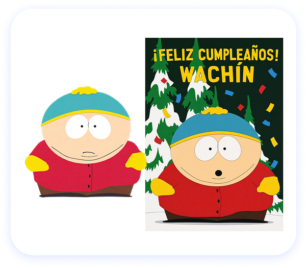

Ahora sos parte de la IA generativa de imágenes. Antes de seguir, conocé a los modelos que hoy generan imágenes en el mundo.
Enero 2021
Julio 2022
Agosto 2022

Estos son los principales modelos de generación de imágenes en la actualidad
Cantidad que generan
Acceso
Diferencias
5 millones al día
(2024)
ChatGPT, Microsoft Copilot y API de OpenAI
Facilidad
(al estar en ChatGPT)
10 millones al día
(2024)
Servidor de Discord y web oficial de Midjourney
Estilo artístico
2 millones al día
(el 80% de sus usuarios lo usa desde el navegador)
Ejecución local en PC y en la nube
Libertad de personalización
(al ser de código abierto)
La inteligencia artificial produjo en 365 días la misma cantidad de
imágenes que la fotografía en 150 años, un aproximado de
15.000 MILLONES
1.000 millones
en 15 meses
2,5 millones de imágenes por día
1.000 millones al año
12.500 millones
en 1 año
Contenido para redes y trends
Contenido profesional personal
Personalizar contenido
Transformaciones de fantasía
Visuales para negocios



0 vasos
Una persona promedio consume 8 vasos de agua diarios.
0 vasos
Generar una imagen consume aproximadamente 3,45 litros, el equivalente a 17,25 vasos de agua.
Cada día aumenta la cantidad de imágenes generadas con inteligencia artificial.
D. Directa
D. Indirecta
Generación
El modelo añade ruido gaussiano progresivamente
hasta volver irreconocible una imagen.
D. Directa
D. Indirecta
Generación
Una red neuronal se entrena para limpiar el
ruido y reconstruir una estructura coherente
(aprende a revertir el proceso anterior).
D. Directa
D. Indirecta
Generación
“Generame un gato siamés
acostado mirando hacia el frente”.|
Entonces vamos a poner en práctica
lo que aprendiste
¡Felicidades por completar con éxito este recorrido!
Antes de terminar, veremos algunas curiosidades relacionadas
con la generación de imágenes de hoy en día.
Ya sabés cómo funcionás. Ahora veamos la importancia que tenés en el mundo, con una encuesta a creadores que utilizan el ecosistema de Adobe.
Creadores encuestados
Utiliza IA generativa como herramienta en su trabajo creativo
¿Gracias a la IA lograron hacer
cosas que de otra forma no
podrían?
¿La IA tuvo un buen impacto
económico en los creadores?
¿Temen que la IA use su
contenido sin permiso para
entrenar?
NO
%19
SI
%81
NO
%15
SI
%85
NO
%31
SI
%69
Sos un Modelo de Difusión, desglosémoslo:
Generas
imagenes
Consta de
tres etapas
vanguardia de la
IA generativa
gesto de volver
gesto de avanzar
Para votar, deslizá la mano: hacia la derecha para Sí o hacia la izquierda para No
¡Gracias por votar!
¿Usás IA para generar imágenes? · Ya votaron 0 personas